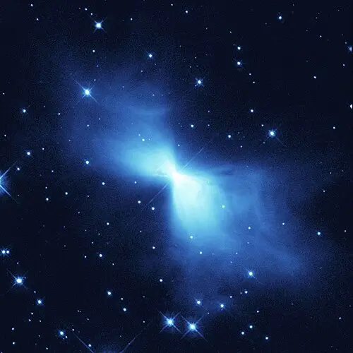
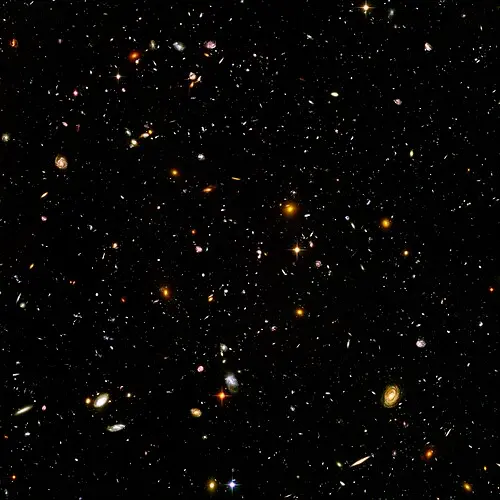
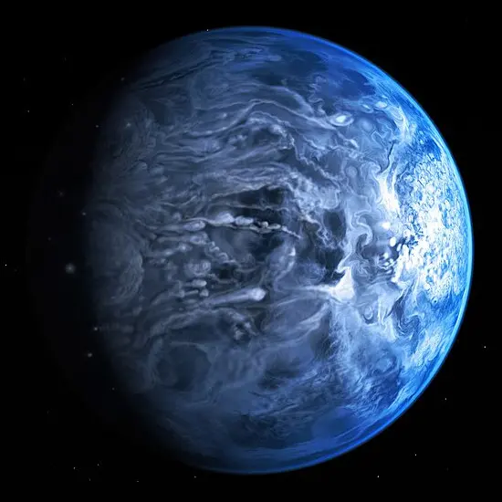
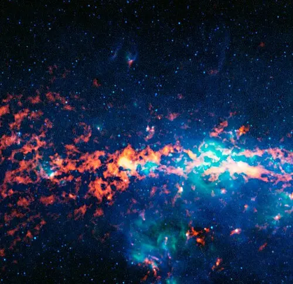
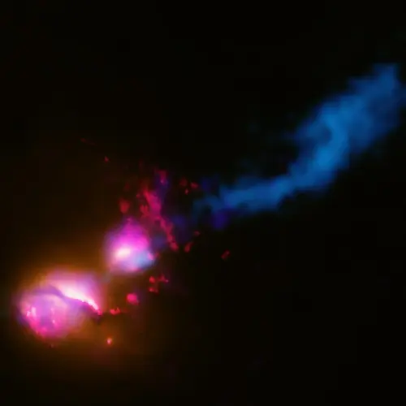

The Coldest Place in the Universe
5,000 light years from earth there is a nebula in the constellation Centaurus known as the Boomerang Nebula. It is recognized as the coldest place in the known universe reaching a staggering -458°F (-272°C). This is because a nearby dying red giant star is ejecting gas and dust outward at high speeds. When the gas quickly expands it loses its thermal energy and causes a refrigerator effect.

10,000 Galaxies
This image taken by the Hubble space telescope is a region of space in the constellation Fornax. The image is about as big as one tenth the diameter of the full Moon in the sky, showcasing the extreme vastness of space. The smallest and reddest galaxies may be among the most distant known to us, appearing when the universe was just 800 million years old.

HD 189733 b
The planet HD 189733 b, in the constellation Vulpecula, is about 64.5 light years away. It has a mass that is 11.2% the mass of Jupiter but its radius is 11.4% larger. It orbits very close to its star so the temperature difference between the day and night side cause extreme winds. This planet is not a place that is fit for human life since it rains razor-sharp molten glass sideways in howling 4500 mph winds.

Sagittarius B2
About 390 light years from the center of our galaxy there is a giant molecular cloud of gas and dust called Sagittarius B2. What makes this particular cloud so interesting is the presence of alcohol. The precursor to amino acids that is created when ethyl alcohol reacts with formic acid is found here and it is what’s responsible for the flavor of raspberries. That means that this giant cloud could smell like raspberry rum!

3C 321
1.2 billion light years away there is a colossal cosmic battle occurring. Two galaxies are engaged in a deadly dance where the supermassive black hole at the center of the larger galaxy is blasting the other one with a powerful beam of energy stretching 1.7 million light years across. Since any planets caught in this beams path could have their atmospheres obliterated, the galaxy has been dubbed the “Death Star Galaxy”.